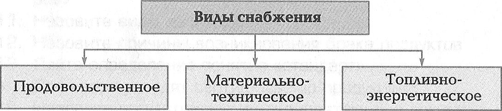
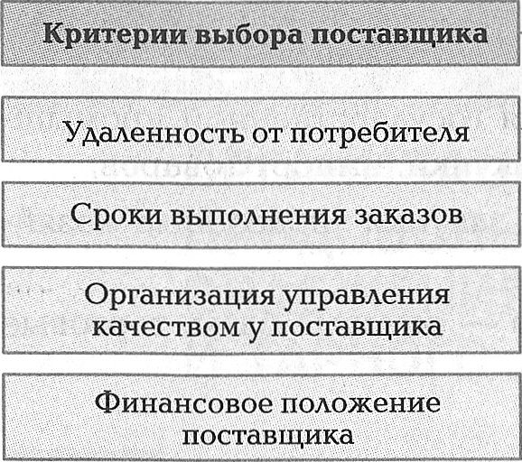

Глава 2
ОРГАНИЗАЦИЯ ПРОДОВОЛЬСТВЕННОГО СНАБЖЕНИЯ СКЛАДСКОГО И ТАРНОГО ХОЗЯЙСТВА
2.1. ВИДЫ ПРОДОВОЛЬСТВЕННОГО СНАБЖЕНИЯ
2.1.1. Снабжение: понятие, значение, виды. Виды поставщиков, организация договорных отношений
Главное условие ритмичной и эффективной работы предприятия общественного питания — рациональное и своевременное снабжение сырьем, полуфабрикатами, продуктами и материально-техническими средствами (рис. 2.1).
рис. 2.1

Требования к продовольственному снабжению:
- обеспечение широкого ассортимента товаров в достаточном количестве и надлежащего качества;
- своевременность и ритмичность завоза;
- сокращение звенности продвижения товара;
- оптимальный выбор поставщиков и своевременное заключение договоров.
Источники снабжения подразделяют на две группы:
- основные — промышленное и сельскохозяйственное производство;
- дополнительные — импорт товаров.
По характеру образования продовольственные ресурсы подразделяют:
- на государственные — продукция государственной промышленности, сельскохозяйственные закупки, импорт товаров;
- местные — децентрализованные закупки (подсобные хозяйства, фермерские хозяйства).
Посредники в закупке продуктов — оптовые базы, торговые агенты, брокеры.
Оптовые базы подразделяют:
- на базы и холодильники, снабжающие мясом, маслом, рыбными и гастрономическими товарами;
- базы, снабжающие бакалейной продукцией;
- плодоовощные базы.
Необходимость в использовании посредников возникает в случаях, когда требуется накопление продуктов и есть условия для их хранения.
Главная функция посредников — организация движения товаров от производителей к потребителям.
Отличительные особенности деятельности торговых агентов и брокеров состоят в том, что они не берут на себя право собственности на товар и имеют ограниченное число функций.
Организация договорных отношений с поставщиками осуществляется следующим образом. Для обеспечения предприятия продовольственными продуктами необходимо решить следующие задачи:
- что закупить?
- сколько закупить?
- у кого закупить?
- на каких условиях закупить?
Необходимо:
- заключить договор;
- проконтролировать его исполнение;
- организовать доставку;
- организовать складирование и хранение.
При выборе поставщика руководствуются определенными критериями (рис. 2.2).
рис. 2.2

Для организации отношений с поставщиками составляется договор.
Договор — это соглашение, в силу которого организация обязуется передать в определенные сроки покупателю продукцию, покупатель обязуется принять товар и уплатить за него определенную сумму (приложение 1).
Договор состоит из четырех разделов:
- преамбула (вводная часть);
- предмет договора;
- дополнительные условия договора;
- прочие условия договора.
Наряду с краткими договорами, содержащими минимум условий, нередко заключают многостраничные, очень подробные договоры, предусматривающие значительное число дополнительных условий.
Перед заключением договора необходимо:
- получить информацию о поставщике;
- убедиться в действительном существовании поставщика;
- ознакомиться с учредительными документами;
- составить проект договора.
▲ НАВЕРХ ▲
► К следующему подразделу 2.1.2